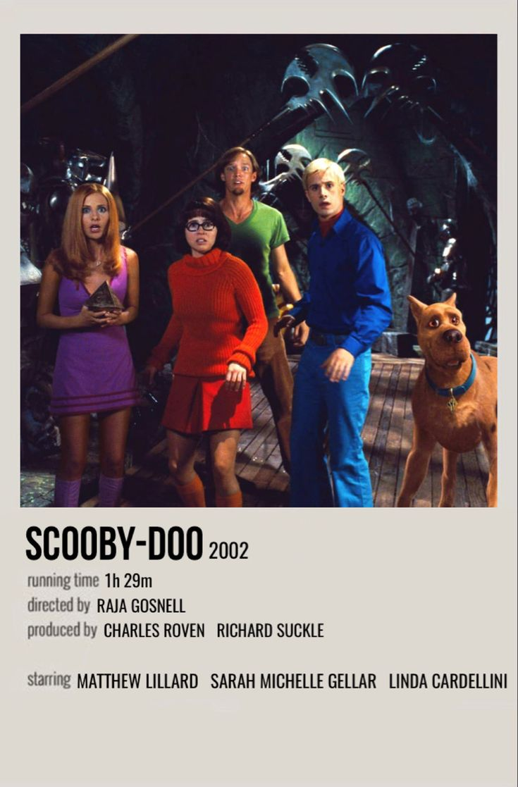
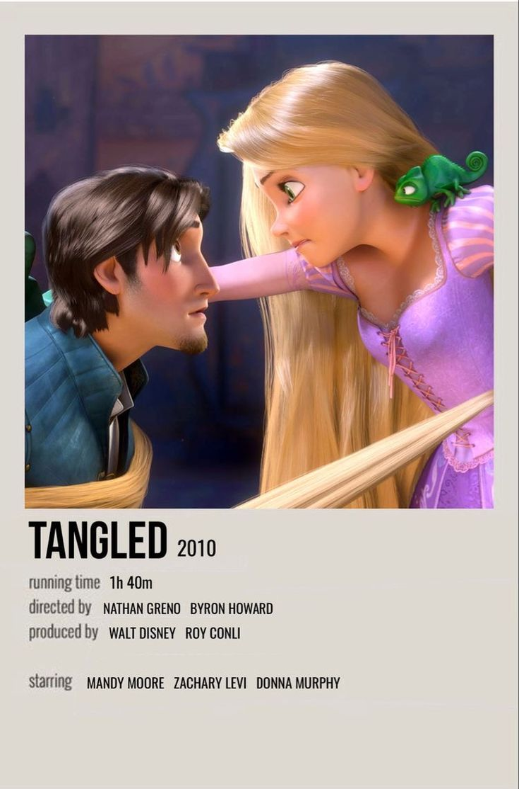
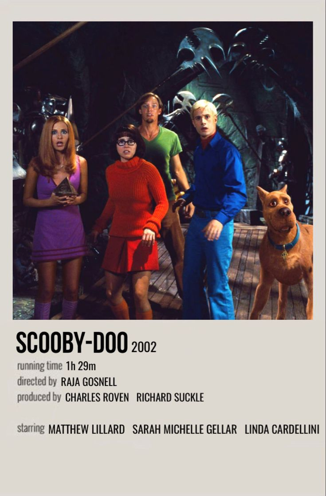
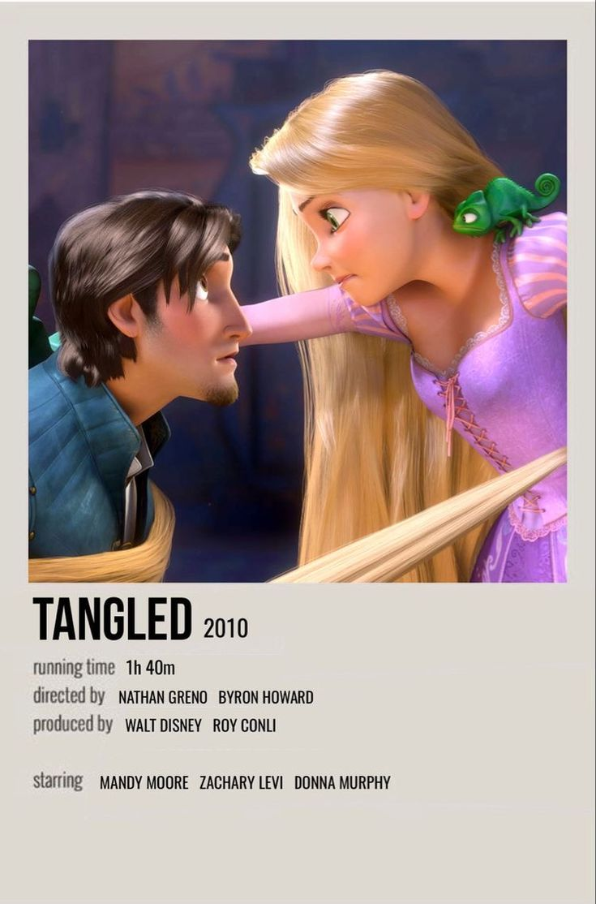

Flavya
Meu nome é Flavya, moro em SP, tenho 18 anos, não trabalho pos estou me dedicando a programação
Historia da cidade de São Paulo
Musicas Favoritas
- Skyfall- Adele
- Samurai- Djavan
- Lquid Smooth - Mistki
- Eu sinto tanta raiva - Baco exu do blues
Comida Favorita
- Batata Frita
Filmes mais gosto
- Flipped
- Enrolados
- Scooby doo
- As vantagens de ser invisivel
- Homem Aranha no aranha verso
- Paranorman
- A origem dos guardiões
 


